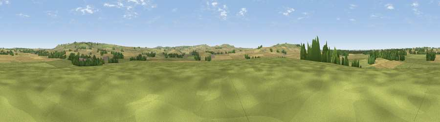

Viewpoint near Winterbourne Monkton
#29513 in England · top 58% of its area beats it · near Winterbourne MonktonThe view, rendered

A 360° render of this exact spot computed from the terrain model, tree cover and land cover — summer colours, afternoon light, calibrated against photographs of famous viewpoints. Real trees, hedges and buildings will differ in detail.
The panorama
Grey silhouette: terrain skyline in each direction (720 bearings, Earth curvature and refraction included). Dashed green: skyline with trees (+15 m) and buildings (+8 m) as obstacles. Blue strip: how far the ground is visible on each bearing.
Where the view opens
Wedge length = distance to the farthest visible ground on that bearing (vegetation-aware). Rings at 10, 25 and 50 km.
What fills the view
53% cropland · 40% grassland · 6% woodland ·
Angular shares of the visible panorama (visual magnitude), not map area. Landscape diversity 0.40 (0–1 Shannon).
Key numbers
More beautiful places nearby
The staircase of upgrades: each row has a higher view potential than everything closer. Driving times are estimates from straight-line distance, calibrated against real road routing — check an actual route before setting out.
| Place | Direction | Drive | Score |
|---|---|---|---|
| Viewpoint near Winterbourne Monkton | ENE · 3 km | ~8 min | 57.6 |
| Viewpoint near Cherhill | SW · 4 km | ~9 min | 64.4 |
| Viewpoint near Cherhill | SW · 4 km | ~10 min | 71.2 |
| Viewpoint near Allington | S · 7 km | ~14 min | 75.6 |
| Martinsell viewpoint | SE · 12 km | ~22 min | 77.3 |
| Viewpoint near Nympsfield | NW · 42 km | ~62 min | 77.5 |
| Viewpoint near Stinchcombe | NW · 44 km | ~64 min | 80.5 |
| Nottingham Hill | N · 58 km | ~80 min | 80.9 |
51.44175, -1.87586 · source: screening · position refined by local search. Computed location — check access rights before visiting.